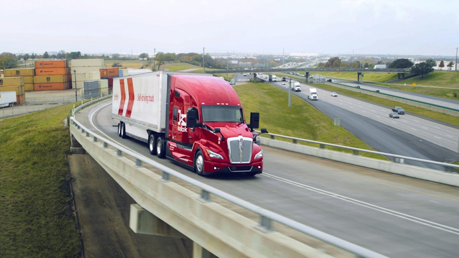

2024年は自動運転トラッキング産業にとって目覚ましい進歩と深刻な挫折の両方が交錯した1年だった。本報告は、北米商業輸送効率評議会（NACFE）による産業状況の包括的な整理であり、センサー技術の革新、V2X通信の進展、サステナビリティへの取り組み、主要各社の動向、そして業界が直面する課題を体系的にまとめている。
2024年のセンサー統合においては大きな進展があった。各社はLiDAR、レーダー、超音波センサー、AIドリブンのデータ処理を組み合わせた高度なカメラシステムを展開し、車両の知覚能力を強化している。
V2X通信は2024年を通じて大きく前進した。QualcommがC-V2Xプラットフォームのアップデートを発表し、「信号機、工事区間、横断歩行者に関するリアルタイム更新」を可能にした。ロサンゼルスはスマート交通インフラを導入し、「交通流を最適化し燃料消費を最大15%削減」する成果をあげた。
前進した企業：
AuroraはNVIDIAとContinentalとのパートナーシップを発表し、「2025年4月にテキサスで自律トラッキングサービスを開始」する計画を立てた。KodiakはMartin Browerに向けた「900回の自律配送」を完了した。Pony.aiはNasdaqでのIPOにより「2億6,000万ドル」を調達し、「250台超のロボタクシーと190台の自律トラックを運営、総走行距離240万マイル超」を達成している。OutriderはSeriesD資金調達で「6,200万ドル」を確保し、「ロボットアーム搭載の自動運転電動ヤードトラック」による構内作業自動化を推進している。
重大な後退：
Embarkが「従業員の約70%を削減し、南カリフォルニアおよびヒューストンのオフィスを閉鎖」した。TuSimpleは米国での事業を中止し、「CreateAIとしてリブランドしてAIゲーム技術に転換」した。Waymoはロボタクシーサービスを優先するため、トラッキング部門を休止した。General MotorsのCruiseは自律タクシー事業への資金提供を停止した。
サイバーセキュリティの脅威：2024年6月、「欧州の主要V2X通信ネットワークを標的としたサイバー攻撃が発生し、複数の自律フリートの運行を一時的に妨害した」。IBMとCiscoが強化されたサイバーセキュリティソリューションを発表した。
サプライチェーンの混乱：半導体不足と「台湾の主要半導体工場での遅延により、新フリートの納入が数か月延期」された。
規制の断片化：米国の法的フレームワークは「断片的な状態が続き、全国展開に大きな課題をもたらした」。連邦自動車運送局（FMCSA）のガイドラインは「州政府や労働組合からの反発に遭い、トラックドライバーの雇用喪失懸念が示された」。責任をめぐる争いが複数の州で継続している。
2024年の技術的進歩、規制整備、リアルワールドでの応用事例は、自動運転トラッキングの可能性を証明した。しかし、その潜在力を完全に発揮するためには、「政府、技術プロバイダー、物流企業の協働」が不可欠だ。2025年以降の産業の成熟は、この三者間の連携の深さにかかっている。